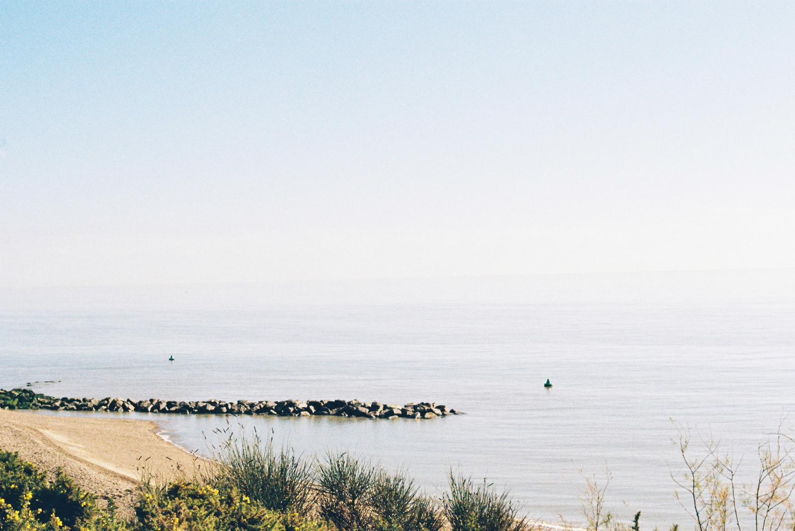

I was scared that the sight of sandcastles will scar my heart again, I was scared of the water, I was scared of dying.
It was night. No sandcastles in sight. Just a bit annoyed by the sand and "that star is exactly perpendicular to you"
- "no it isn't"
One grew around beaches, the second was born in a place where you can't ever find one, and the third who had only tried crafting tears and sand back in 2018.
I love the ocean- the ultimate primordial origin.
Reminds me of death. Helps me romanticise it.
Wait. It might just be the Ophelia Complex?
Immense physical distress, quick subject to decay it seems.
Should just avoid the water then.
"Drowning is the stupidest way one could die"
"I would love to die in the arms of the ocean"
-never realised when this transition happened.
I want to be Aphrodite.